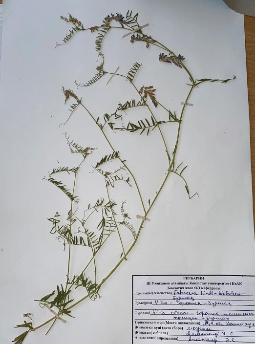

Тышқан сиыржоңышқа - Vicia cracca L - Горошек мышиный

Биологиялық сипаттамасы: Тышқан сиыржоңышқасының бұршақтарының-биіктігі 120 см-ге дейін, жалаңаш немесе басылған сұр шаштары бар өсімдік. Сабақтары әлсіз, жабысқақ, қырлы, әдетте тармақталған. Өте полиморфты түр. Өсімдіктің барлық бөліктерінің жасару дәрежесі, жапырақтардың мөлшері мен пішіні өзгереді. Жапырақтары кезектесіп келеді, ұзындығы 5-12 см құрайды, жұптасқан, қысқа жапырақшаларда 6-10 жұп жапырақтары бар. Жапырақтың жалпы жапырақшасы қысқа, ұзындығы 0,5-1 см, оның негізінде бір-екі бүтін жартылай жебе тәрізді. Жапырақтары ұзындығы 1,5—3 см және ені 2-4 мм, көлденеңінен ашық, жіңішке сызықты, ұшында үшкір немесе дөңгелектелген, екі жағында немесе түбінде түкті. Қылқаламдар тығыз, көп гүлді (40 гүлге дейін). Гүлдері көбелек тәрізді, ұзындығы 8-11 мм ашық немесе ашық күлгін, кейде ақ түсті. Гүлдің жоғарғы жапырақшасы (жалауша) ұзындығы бойынша төменгі жапырақшаға тең. Маусым — шілде айларында, солтүстік облыстарда тамызда гүлдейді. Бұршақтар 15-20, сирек ұзындығы 25 мм-ге дейін және ені 4-6 мм-ге дейін, ұзын, 4-6 тұқымы бар. Тұқымдар сфералық, диаметрі 2,3-3 мм, дақтары бар қара. Тамыз және қыркүйек айларында піседі.
Таралу аймағы:Қазақстанның оңтүтік, батыс, орталық аймақтарында, Ресейдің Қиыр Шығысы, бұрынғы КСРО мен Кавказдың Еуропалық бөлігі, батыс және шығыс Сібір, Орта Азия, Скандинавия, Атлант және Орта Еуропа, Жерорта теңізі, Моңғолия, Жапон-Қытай және Оңтүстік Азия аудандары, Солтүстік Америка.